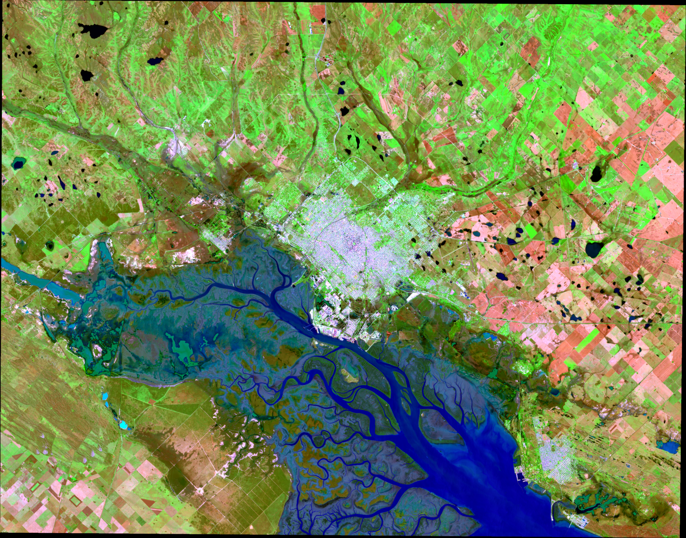
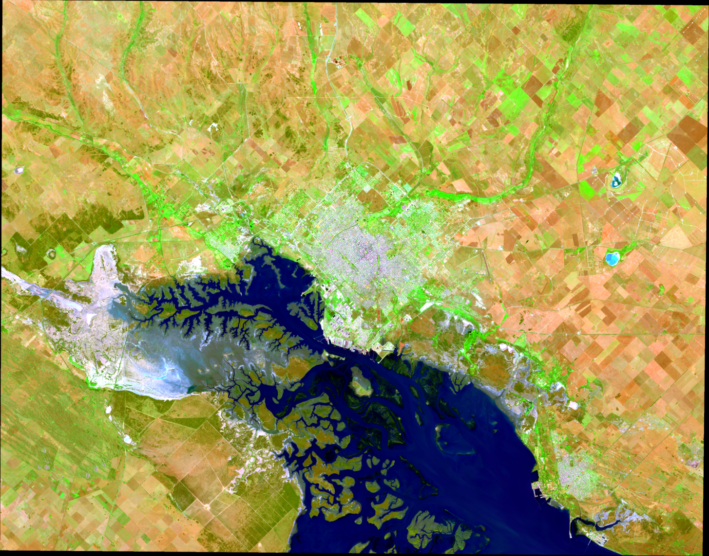
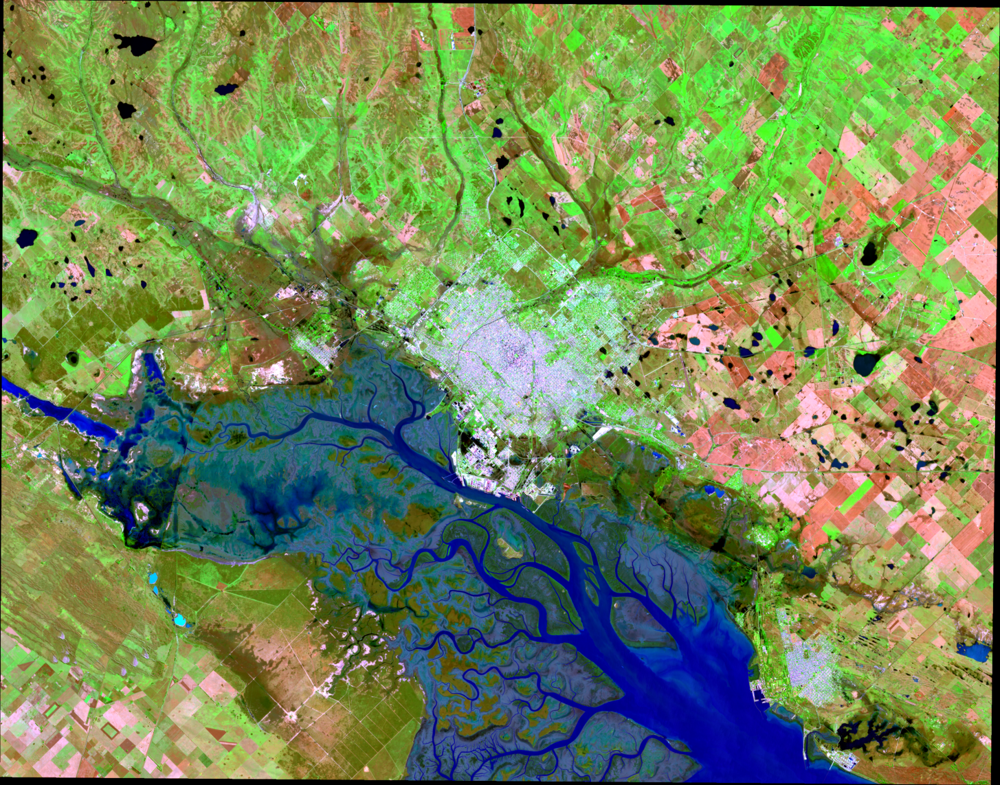
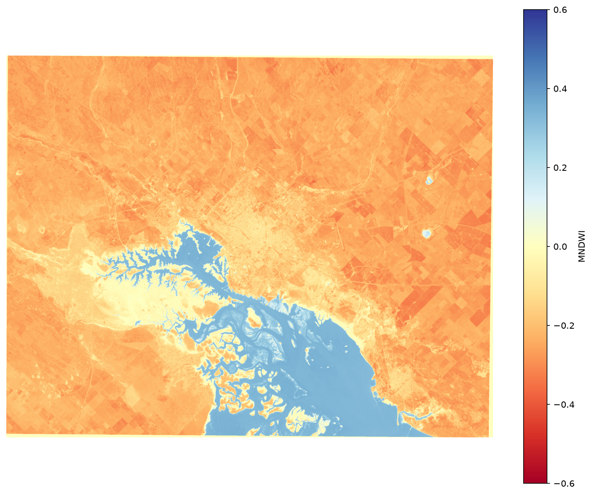
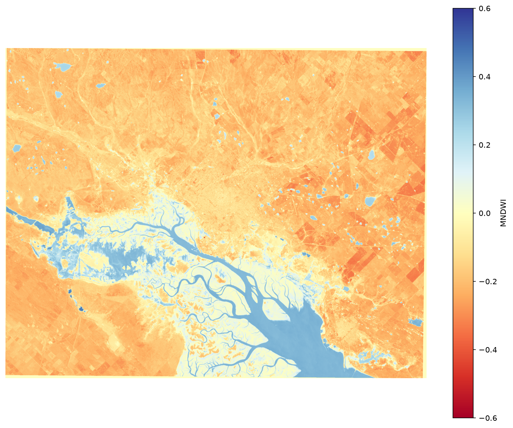
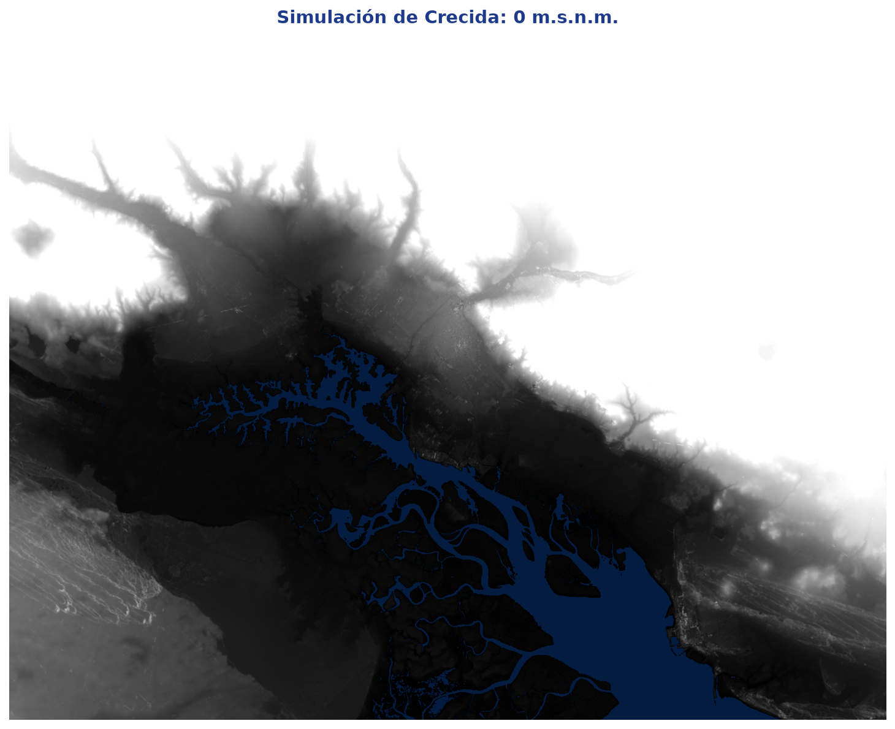
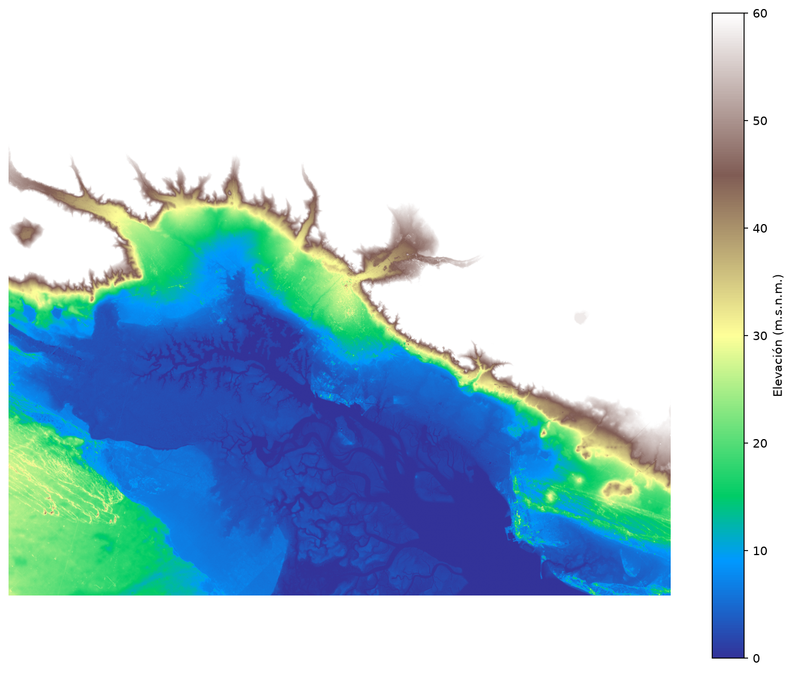
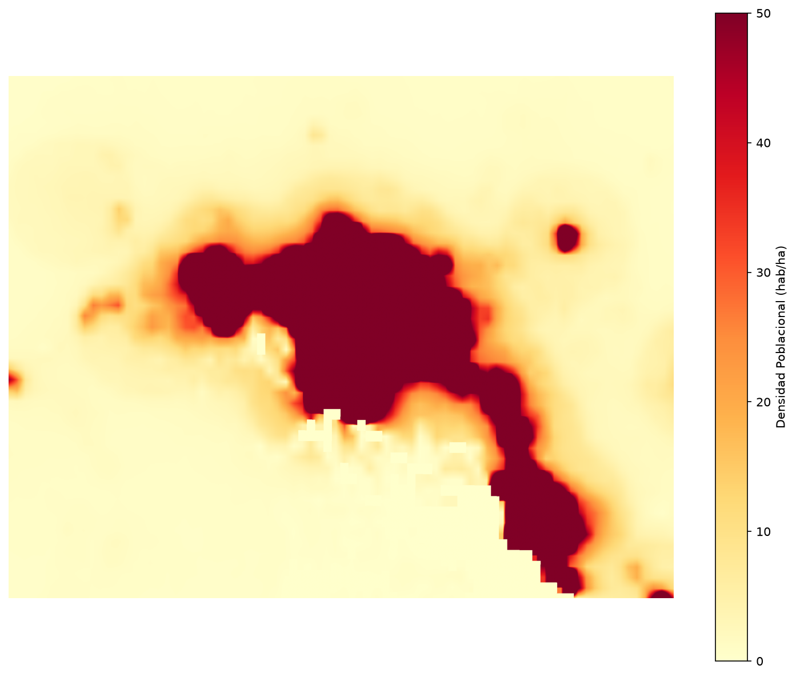

Clasificación de Imágenes Satelitales y Detección de Inundaciones
Caso de Estudio: Inundación en la Ciudad de Bahía Blanca en 2025
Métricas de Impacto de la Inundación
Visualización de la Inundación sobre Bahía Blanca

Máscara de inundación final (azul) sobre composición en falso color (Marzo 2025).
Resumen de la Metodología:
- Detección Satelital: Se procesaron dos imágenes Sentinel-2 correspondientes al 19 de febrero de 2025 (pre-inundación) y el 11 de marzo de 2025 (post-inundación).
- Algoritmo de Machine Learning: Se entrenó un clasificador Random Forest de forma semi-supervisada. Las etiquetas de entrenamiento se generaron automáticamente mediante umbrales robustos de los índices MNDWI y NDWI.
- Filtro Topográfico (DEM): Se eliminaron falsos positivos urbanos y sombras aplicando restricciones del Modelo de Elevación Digital de Copernicus (pendientes ≤ 5° y altitud ≤ 45 m.s.n.m.).
- Cuerpos de Agua del IGN: Se descontaron los cursos y espejos de agua permanentes del IGN descargados mediante WFS.
Composición en Falso Color Compuesto (SWIR, NIR, Verde)
Esta combinación de bandas espectrales facilita enormemente la visualización del agua (que se observa en color azul profundo o negro) frente a la vegetación (verde brillante) y el suelo (tonos marrones).

19 de Febrero 2025 - Antes de la Inundación

11 de Marzo 2025 - Después de la Inundación (Inundación visible en el sector este y sur)
Índice Espectral de Agua Modificado (MNDWI)
El MNDWI aprovecha la banda verde y la banda SWIR1. Los valores positivos y cercanos a 1 (color azul) representan agua pura, mientras que los valores negativos representan suelo y edificación.

MNDWI - 19 de Febrero 2025

MNDWI - 11 de Marzo 2025
Simulación Teórica de Crecida (DEM)
Esta simulación permite evaluar de forma teórica qué áreas se verían afectadas si el agua subiera a una altitud determinada (cota sobre el nivel del mar), considerando exclusivamente el relieve de Copernicus DEM (para pendientes bajas ≤ 5°).
Controles de Simulación
💡 **Análisis de Vulnerabilidad**
Las cuencas bajas del este y los humedales del sur se inundan de forma masiva por debajo de la cota de 6m. La zona urbana central alta está resguardada por su altitud (cota > 20m).

Simulación topográfica a cota 0 m.s.n.m.
Topografía y Elevación (Copernicus DEM GLO-30)
El modelo digital de elevación nos permite verificar si el agua se acumula físicamente en llanuras bajas o zonas deprimidas.

Mapa de Elevación de Bahía Blanca (Copernicus GLO-30, resolución de 20m tras interpolación).
Análisis de Elevaciones:
- La ciudad de Bahía Blanca se asienta sobre una pendiente que desciende de norte a sur hacia el estuario.
- Las zonas inundadas detectadas se concentran predominantemente en alturas inferiores a los 25 metros sobre el nivel del mar y llanuras con pendiente prácticamente nula (≤ 2°).
- El filtro topográfico implementado eliminó falsos positivos ubicados en las mesetas altas al norte de la ciudad.
Distribución de la Población (WorldPop 1km)
Utilizando los datos de distribución espacial de la población mundial de WorldPop (2020), cruzamos la máscara de inundación para calcular el número de personas expuestas directamente.

Mapa de Densidad Poblacional (hab/ha) de WorldPop alineado al AOI.
Análisis Demográfico:
- Población estimada expuesta: 944 personas.
- La mayor concentración de la inundación ocurrió en áreas agrícolas, de humedales y periféricas, lo que limitó significativamente el impacto sobre las zonas urbanas de alta densidad.
Mapa Interactivo de Hidrología Oficial del IGN
Este mapa interactivo carga el polígono de referencia (AOI) y las capas vectoriales oficiales del Instituto Geográfico Nacional (IGN) correspondientes a Bahía Blanca, importadas localmente sin restricciones CORS.